중국에서는 젓가락을 밥그릇에 꽂으면 안 됩니다. 이는 매우 무례한 행동으로 간주됩니다.
젓가락을 밥그릇에 꽂는 것은 장례식에서 사용하는 방식이므로, 식사 중에는 절대 피해야 합니다.
중국에서는 젓가락을 세로로 놓는 것이 일반적이며, 젓가락 받침에 올려두는 것이 올바른 예절입니다.
중국에서는 밥그릇을 손으로 들고 먹는 것이 올바른 예절입니다.
밥그릇을 들고 숟가락이나 젓가락으로 먹는 것이 정상적인 식사 방법입니다.
밥그릇을 들지 않고 테이블에 그대로 두고 먹는 것은 예의에 어긋납니다.
중국에서는 보통 음식을 짝수로 시킵니다.
짝수는 행운과 조화를 상징하며, 특히 2, 4, 6, 8개가 선호됩니다.
홀수 개의 음식을 주문하는 것은 피하는 것이 좋습니다.
중국에서는 원탁을 시계방향으로 회전시키는 것이 예절입니다.
반시계방향으로 회전시키는 것은 피해야 하며, 이는 불길한 의미로 여겨집니다.
음식을 돌릴 때는 천천히, 시계방향으로 회전시켜야 합니다.
선택된 요소: 없음